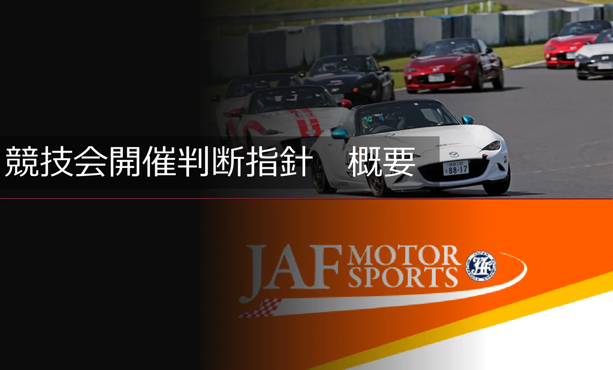
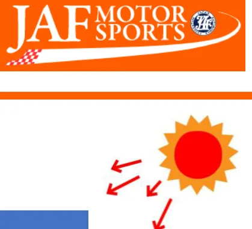
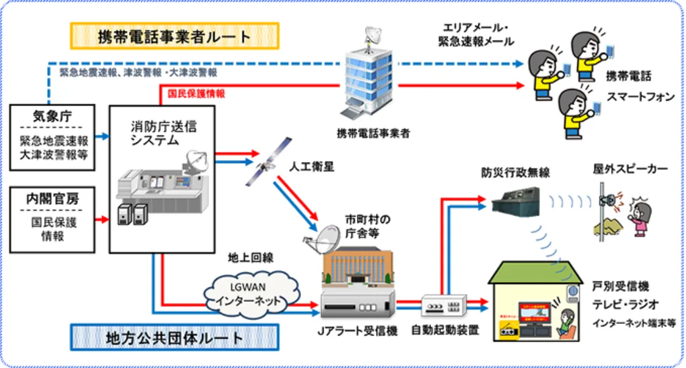

競技会開催判断指針
この文書には自動変換で完全に読み取れなかった箇所があります。正式な判断は必ず JAF の原本 PDF をご確認ください。

P.2目次
・指針概要P2～4・指針本文P5～9

P.3１本指針の考え方（要点のみ抜粋）
＜ポイント＞・本指針は一律適用ではなく参考資料である・競技会開催判断における主体は主催者である・競技会中止前提ではなく代替措置の検討を踏まえ
ている
| 事前情報収集 | |||
| 暑さ | 地震 | 悪天候 | 感染症 |
| 参考： 熱中症予防サイト （環境省） | 参考： 地震その時10のポイン ト （東京消防庁） | 参考： 防災・災害対策 （内閣府大臣官房政府 広報室） | 参考： 感染対策の基礎知識 （厚生労働省） |

２競技会開催判断基準（暑さ）
暑さ
| WBGT値 | 気温の目安 | 参考指標 | 対応例 |
|---|---|---|---|
| 31以上 | 35℃以上 | 競技会の中止・中 断または延期 | STEP1、2の実施もしくは競技会の中 止・中断または延期を検討したうえで 判断する |
| 28以上31未満 | 31℃以上35℃未満 | 競技開催時間の調 整および短縮等の 措置を講じる | STEP1、2を参考とする |
| 25以上28未満 | 28℃以上31℃未満 | 熱中症予防の各種 対策を強化 | STEP1を参考とする |
| 21以上25未満 | 24℃以上28℃未満 | 熱中症に警戒 | STEP1を参考とする |
P.5３熱中症予防対策（STEP1・STEP2）
STEP1：熱中症予防対策の強化（基本対策）
・来場者および関係者への熱中症予防に関する注意喚起
・こまめな水分、塩分補給の推奨
・救護体制および搬送体制の確認
・日陰、休憩場所の確保
・各種ブース等の暑熱対策の推奨
STEP2：競技負荷軽減措置の強化（追加対策）
・競技開催時間の変更
・走行回数の削減
・走行距離の短縮
・セッション、ヒート時間の短縮
・クーリングタイムの導入
・セッション、ヒート間の休憩時間の延長
・観客導線の冷却設備（ミスト、スポットクーラーなど）の整備
・各種イベントの時間調整
P.6競技会開催判断に関する指針
１ はじめに
近年、気候変動の進行に伴い、夏季の酷暑や局地的豪雨、地震などの自然災害が頻発している。特
にモータースポーツにおいては、レーシングスーツの着用や車内の高温環境など、競技特性として熱ストレスを受けやすく、競技車両を操作するドライバーのみならず、ピットやパドックなどで業務を行うメカニックやエンジニアなどのチームスタッフ、屋外で観戦する来場者においても熱中症等の健康リスクが高まっている。同時に、酷暑や局地的豪雨、落雷などの天候要因が観戦環境へ影響を及ぼすことや、地震や地滑りの自然災害が競技会開催会場への交通アクセスを遮断し、制限する要因となることで来場者やチーム関係者への影響も予期せぬ状況が起きているといえる。このような外部環境の変化を踏まえ、競技会運営にあたっては従来以上に安全対策を講じるとともに開催判断の適切性、適時性が求められている。
２ 目的
本ガイドラインは、ＪＡＦ公認モータースポーツ競技会の開催にあたり、ドライバー、競技役員の
みならず来場者、主催者、協賛企業を含む関係者の安全を最優先とする観点から、酷暑、落雷、局地的豪雨、悪天候、地震などの環境要因に対する事前対策の励行、開催可否ならびに延期または続行の判断基準およびその基本的な考え方を明確にすることを目的として策定するものである。競技会開催可否等の判断については、ＪＡＦ国内競技規則１０－１０ １４）に基づき最終的に競技会審査委員会が判断を下すものであるが、判断に至るまでの過程やその検討においては、本指針を参照いただき主催者を中心として協議がなされるものであり、①判断の一貫性、②合理性の担保を確保するための「意思決定支援フレームワーク」とされたい。本指針は各競技会における最終判断を代替するものではない。したがって各競技会の事情や競技特性、会場環境等を踏まえた判断を拘束するものではなく、各競技会の中止、延期または続行の判断を下す際の指針にしていただくことが策定目的の目指すべきところである。主催者においては、あらゆる場面での安全管理、事前予測が求められる時勢において、これらの指針を参照し事前に判断チャートならびに意思決定の仕組み（ガバナンス）を策定し関係者間で共有しておくことが望ましい。
３ 競技会開催判断基準
下記を参考とし、実際の競技会場における状況、競技の進行状況を優先し判断すること。なお、原
則として競技会は「安全確保可能な範囲での継続」を基本とし、中止は最終手段とする。
（１） 暑さ
公益財団法人日本スポーツ協会の熱中症予防運動指針におけるＷＢＧＴ値（暑さ指数）※を参考
指標とし、下記参考指標を踏まえ各カテゴリーの状況に則した判断をすること。なお、夏季（７～９月）に開催される競技会においては、本指針の追加対策（ＳＴＥＰ２）の適用をあらかじめ想定し、タイムスケジュールに十分な余裕（バッファ）を設けた興行設計を行うとともに、事前に判断チャートを策定し関係者間で共有しておくことを強く推奨する。また、各競技会開催地におけるＷＢＧＴ値については、環境省熱中症予防情報サイト 暑さ指数を参照すること。
P.7ＳＴＥＰ１：熱中症予防対策の強化（基本対策）
・来場者および関係者への熱中症予防に関する注意喚起
・こまめな水分、塩分補給の推奨
・救護体制および搬送体制の確認
・日陰、休憩場所の確保
・各種ブース等の暑熱対策の推奨
ＳＴＥＰ２：競技負荷軽減措置の強化（追加対策）
・競技開催時間の変更
・走行回数の削減
・走行距離の短縮
・セッション、ヒート時間の短縮
・クーリングタイム導入
・セッション、ヒート間の休憩時間の延長
・観客導線の冷却設備（ミスト、スポットクーラーなど）の整備
・各種イベントの時間調整
ＷＢＧＴ参考指標
| ＷＢＧＴ値 | 気温の目安 | 参考指標 | 対応例 |
|---|---|---|---|
| ３１以上 | ３５℃以上 | 競技会の中止・中断または延期 | ＳＴＥＰ１、２の実施もしく は競技会の中止・中断または 延期を検討したうえで判断す る |
| ２８以上３１ 未満 | ３１℃以上３ ５℃未満 | 競技開催時間の調整および短 縮等の措置を講じる | ＳＴＥＰ１、２を参考とする |
| ２５以上２８ 未満 | ２８℃以上３ １℃未満 | 熱中症予防の各種対策を強化 | ＳＴＥＰ１を参考とする |
| ２１以上２５ 未満 | ２４℃以上２ ８℃未満 | 熱中症に警戒 | ＳＴＥＰ１を参考とする |
※ＷＢＧＴ：Ｗｅｔ Ｂｕｌｂ Ｇｌｏｂｅ Ｔｅｍｐｅｒａｔｕｒｅ
熱中症を予防することを目的として１９５４年にアメリカで提案された指標であり、ＩＳＯ規格化や国内ガイドライン整備を通じて運用が継続的に見直されている。単位は気温と同じ摂氏度（℃）で示されるが、その値は気温とは異なる。暑さ指数（ＷＢＧＴ）は人体と外気との熱のやりとり（熱収支）に着目した指標で、人体の熱収支に与える影響の大きい①湿度、②日射・輻射(ふくしゃ)など周辺の熱環境、③気温の３つを取り入れた指標である。
※ＷＢＧＴ参考指標に加え、会場内の測定位置（パドック、ピット、コクピット等）やカテゴリーご
P.8との負荷、走行時間、防護装備の差、個人差、日射・風速・湿度等の現場実態を総合的に勘案し、数値のみに依拠せず、主催者が安全確保の観点から現場の実情に即した判断を検討し、競技会審査委員会が最終判断を行うものとする。
参考：
・環境省 ＷＢＧＴ値
環境省熱中症予防情報サイト 暑さ指数とは？
・公益財団法人日本スポーツ協会
熱中症を防ごう - JSPO
（２） 地震
国および各地方自治体が発表する情報ならびに判断基準に準拠し対応を行うものとする。
参考：
・東京消防庁
地震 その時10 のポイント | 東京消防庁
（３） 悪天候
国および各地方自治体が発表する情報ならびに判断基準に準拠し対応を行うものとする。
参考：
・内閣府大臣官房政府広報室
大雨や台風の気象情報に注意して 早めに防災対策・避難行動をとりましょう | 政府広報オンライン
（４） 交通道路事情や公共交通機関による会場へのアクセス
当該競技会の開催により大規模な混雑が予見される場合、国および各地方自治体、警察その他関
係機関が発表する交通情報や競技会場周辺でのイベント開催状況、来場経路に関する注意事項等については、主催者が主体となり適切な方法（会場アナウンス、掲示、公式ホームページ等）により参加者および来場者へ情報提供を行うこと。
（５） 感染症
感染症が広く発生した場合は、国および各地方自治体が発表する情報ならびに判断基準に準拠す
るとともに、主催者においては自主的な感染対策の取組みを検討すること。また、必要に応じて基本的な感染対策（マスクの着用、手洗い等の手指衛生、換気、「三つの密」の回避および人と人との距離の確保）の考え方を参考にすることとする。なお、主催者により実施される感染対策の取組みは適切な方法（会場アナウンス、掲示、公式ホームページ等）により参加者および来場者へ情報提供を行うこと。
（６） 全国瞬時警報システム（J アラート）
全国瞬時警報システム（J アラート）とは、弾道ミサイル情報、緊急地震速報、大津波警報など、
対処に時間的余裕のない事態に関する情報を携帯電話等に配信される緊急速報メールや市町村防災
P.9行政無線等により、国から住民まで瞬時に伝達するシステムである。全国瞬時警報システム（J アラート）が発信された場合はその指示に従うものとする。

４ おわりに
本指針は、情勢の変化等を踏まえ随時更新されるものである。最新情報はＪＡＦモータースポー
ツ公式ホームページにて確認すること。
＜判断フロー参考例＞
１）競技会開催前
□ 本ガイドラインの確認
□ 判断フローおよび判断基準の事前設定
□ 判断トリガー条件の設定
□ 意思決定責任者の明確化
□ 緊急対応時の報告系統の確認
□ 緊急対応手順の確認
２）当日
□ 競技開始前および競技中にＷＢＧＴ値または代替指標（環境省データ等）、各種警報発令状況の確認□ 以下の条件に該当する場合、判断プロセスを開始する
・ＷＢＧＴが基準レベルを超過した場合
・気象警報／注意報が発令された場合
・救急委員長ならびに医師団長からの指摘があった場合
□ 計測結果を競技会審査委員会へ報告
□ 必要な措置の検討
□ 大会組織委員会、興行責任者、競技会審査委員会等が連携して措置の妥当性を協議のうえ判断
P.10判断区分：
① 継続（対策強化）
② 制限付き継続（時間短縮等）
③ 一時中断
④ 中止／延期
３） 判断後
□ すべての関係者へ決定内容の通知□ 判断理由および経過の記録